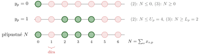
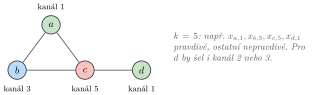
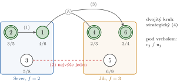
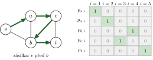
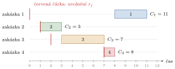
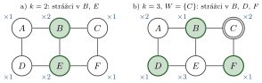

B.3 Typ 3: Formulace jako ILP nebo SAT¶
Úloha 3 testu: „Formulujte daný problém jako ILP nebo SAT úlohu.“ (6 bodů). Ukázkový test chce u ILP proměnné a jejich význam, všechna omezení (u každé skupiny, co zajišťuje), účelovou funkci a velikost programu. Postup na papíře je v oddílu A.3.3.
B.3.1 Kde to ve skriptech je¶
- Tři základní vzory ILP:
- problém 11.6 a oddíl 11.2: redukce \(\prob{Vertex Cover} \redp \prob{ILP}\) (výběr podmnožiny, \(x_u+x_v\ge1\)), \(\prob{3-SAT} \redp \prob{ILP}\) (klauzule jako „součet literálů \(\ge1\)“, negace jako \(1-y\)), \(\prob{3-Coloring} \redp \prob{ILP}\) (indikátory \(x_{v,c}\) „právě jedna barva“ a zákaz stejné barvy na hraně).
- Modelování v ILP:
- kapitola 15 a cvičení 8: Cvičení 8.1 (pošta) (směny s cyklickým týdnem), Cvičení 8.2 (řezání tyčí) (řezání tyčí podle vzorů), Cvičení 8.3 (chromatické číslo) (chromatické číslo a proč je přímý model nepraktický), Cvičení 8.4 (Max-Cut a nejmenší řez) (MaxCut a nejmenší řez), Cvičení 8.5 (plánování výroby) (výroba se skladem a fixními náklady, velké \(M\)).
- Kódování do SAT:
- kapitola 14 a cvičení 7: Cvičení 7.1 (Vertex Cover, Dominating Set), Cvičení 7.2 (hamiltonovská cesta a kružnice, proměnné „vrchol \(v\) na pozici \(i\)“), Cvičení 7.3 (Tseitinova transformace, parita), Cvičení 7.4 („nejvýše jeden“ a „nejvýše \(k\)“ s \(O(n)\), resp. \(O(nk)\) klauzulemi). Starší vzor je převod dláždění na CNF v důkazu Cook–Levinovy věty (redukce \(\prob{Dlaždičkování} \redp \prob{SAT}\): proměnná „dlaždice \(i\) na pozici \((x,y)\)“ a čtyři typy klauzulí).
- Rozvrhy:
- redukce \(\prob{3-Coloring} \redp \prob{Rozvrh zkoušek}\) (rozvrh zkoušek je barvení grafu) a úloha 3 ukázkového testu (rozvrh zkoušek jako ILP).
- Úlohy navíc:
- ILP (všech osm úloh kapitoly 15 je typu 3): úloha 15.1 (logické podmínky: ekvivalence, „právě jeden“, implikace), 15.2 (spravedlivé dědictví: minimalizace rozdílu, počty předmětů), 15.3 (studijní plán s prerekvizitami: proměnné s časovým indexem), 15.4 (rozvoz palet: zachování toku, celočíselný počet kamionů), 15.5 (množstevní sleva, velké \(M\)), 15.6 (pošťák a parita: pomocná celočíselná proměnná), 15.7 a 15.8 (dvě formulace téhož problému: síla LP relaxace, zákaz podcyklů vs. MTZ); dále 11.2 (balíky do dodávek: nejmenší počet košů s konflikty) a 10.6 (1-in-3 SAT jako soustava rovnic). SAT (všech osm úloh kapitoly 14 je typu 3): úloha 14.1 (latinský čtverec a sudoku: bloky „právě jedna“), 14.2 (instalace balíčků: závislosti a konflikty, „nejvýše \(k\)“ čítačem), 14.3 (hledání min: omezení na konstantně mnoha proměnných), 14.4 (rozsazení hostů: kapacita stolu čítačem, symetrie), 14.5 (doplnění dam), 14.6 (rozvrh se závislostmi: časový index a čítač), 14.7 (zhasni světla: parita Tseitinovou transformací) a 14.8 (převozník: plánování s časovým indexem). Ze sbírky: ILP 11.12 (0/1 přípustnost), 15.9 až 15.18 (batoh, KNF, 3-barvení, pokrytí, párování, balení množin, TSP, autobusy); SAT 14.9 až 14.12 (\(k\)-barevnost, trojrozměrné párování, hamiltonovská a dlouhá kružnice).
B.3.2 Řešené úlohy: ILP a SAT¶
Typová úloha 3.1 [6 bodů]
Kraj chce postavit nejvýše \(p\) nemocnic. Je dána množina obcí \(O\), množina možných lokalit \(L\) a vzdálenosti \(d_{o,l}\in\N\) obce \(o\) od lokality \(l\). Každá obec bude spádová k právě jedné postavené nemocnici. Cílem je minimalizovat největší vzdálenost obce od její spádové nemocnice.
Formulujte úlohu jako celočíselný lineární program. Uveďte proměnné a jejich význam, všechna omezení (u každé skupiny napište, co zajišťuje), účelovou funkci a velikost programu (počet proměnných a omezení vzhledem k \(|O|\) a \(|L|\)).
Řešení
Proměnné.
- \(y_l\in\{0,1\}\) pro \(l\in L\): \(y_l=1\) právě když se v lokalitě \(l\) postaví nemocnice.
- \(x_{o,l}\in\{0,1\}\) pro \(o\in O\), \(l\in L\): \(x_{o,l}=1\) právě když je obec \(o\) spádová k nemocnici v \(l\).
- \(t\ge0\): pomocná proměnná, horní mez na vzdálenost každé obce od její nemocnice (v optimu je rovna největší vzdálenosti). Může být i reálná, optimum je jedna z hodnot \(d_{o,l}\).
Omezení.
- Nejvýše \(p\) nemocnic: \(\displaystyle\sum_{l\in L} y_l\le p\) (jedno omezení).
- Každá obec má právě jednu spádovou nemocnici: \(\displaystyle\sum_{l\in L} x_{o,l}=1\) pro každé \(o\in O\).
- Spádová smí být jen postavená nemocnice: \(x_{o,l}\le y_l\) pro každé \(o\in O\), \(l\in L\).
- \(t\) je aspoň vzdálenost každé obce: \(\displaystyle t\ge\sum_{l\in L} d_{o,l}\,x_{o,l}\) pro každé \(o\in O\).
Díky omezení 2 je součet v omezení 4 právě vzdálenost obce \(o\) od její spádové nemocnice.
Účelová funkce: \(\min\ t\). Maximum \(\max_o(\dots)\) není lineární, proto ho nahrazuje proměnná \(t\) omezená zdola všemi výrazy (trik „minimalizace maxima“).
Správnost. Každé rozmístění nemocnic s přiřazením obcí dává přípustné řešení s \(t\) rovným největší vzdálenosti. Naopak v každém přípustném řešení postavené nemocnice (\(y_l=1\)) a přiřazení (\(x_{o,l}=1\)) tvoří platné řešení úlohy a \(t\) je aspoň jeho největší vzdálenost; minimalizace stlačí \(t\) přesně na ni. Optima se tedy shodují.
Velikost. Proměnných \(|L|+|O|\cdot|L|+1\); omezení \(1+|O|+|O|\cdot|L|+|O|=1+2|O|+|O|\cdot|L|\) (bez podmínek oboru \(\{0,1\}\) a \(t\ge0\)).
Typová úloha 3.2 [6 bodů]
Katedra rozděluje studenty \(S\) do týmových projektů \(P\). Student \(s\) ohodnotil projekt \(p\) číslem \(c_{s,p}\in\{0,\dots,5\}\) (spokojenost). Každý student musí být v právě jednom projektu. Projekt \(p\) se buď neotevře (nemá žádného studenta), nebo se otevře a má nejméně \(L_p\) a nejvýše \(U_p\) studentů, kde \(1\le L_p\le U_p\). Dvojice studentů z množiny \(K\subseteq\binom S2\) spolu nechtějí pracovat a nesmí být ve stejném projektu. Cílem je maximalizovat celkovou spokojenost.
Formulujte úlohu jako celočíselný lineární program (proměnné s významem, omezení s tím, co zajišťují, účelová funkce, velikost vzhledem k \(|S|\), \(|P|\) a \(|K|\)).
Řešení
Proměnné.
- \(x_{s,p}\in\{0,1\}\) pro \(s\in S\), \(p\in P\): \(x_{s,p}=1\) právě když student \(s\) pracuje na projektu \(p\).
- \(y_p\in\{0,1\}\) pro \(p\in P\): \(y_p=1\) právě když se projekt \(p\) otevře.
Omezení.
- Každý student v právě jednom projektu: \(\displaystyle\sum_{p\in P} x_{s,p}=1\) pro každé \(s\in S\).
- Zavřený projekt nemá nikoho, otevřený nejvýše \(U_p\): \(\displaystyle\sum_{s\in S} x_{s,p}\le U_p\,y_p\) pro každé \(p\in P\).
- Otevřený projekt má aspoň \(L_p\) studentů: \(\displaystyle\sum_{s\in S} x_{s,p}\ge L_p\,y_p\) pro každé \(p\in P\).
- Konfliktní dvojice ne ve stejném projektu: \(x_{s,p}+x_{s',p}\le 1\) pro každé \(\{s,s'\}\in K\) a \(p\in P\).
Omezení 2 a 3 jsou dvě poloviny podmínky „počet studentů je \(0\), nebo leží v \([L_p,U_p]\)“, kterou jednou lineární nerovnicí zapsat nejde: binární \(y_p\) vybírá, která z obou možností platí (pro \(y_p=0\) dává omezení 2 počet \(0\) a omezení 3 nic neříká, pro \(y_p=1\) dávají interval). Protože \(L_p\ge1\), nemůže být \(y_p=1\) u prázdného projektu.

Omezení 2 a 3 pro jeden projekt s \(L_p=2\), \(U_p=4\) (příklad nad rámec zadání); \(N\) je počet jeho studentů. Všimni si: přípustné hodnoty \(\{0\}\cup[L_p,U_p]\) nejsou interval (chybí \(1\)), takže je nepopíše žádná dvojice nerovnic \(a\le N\le b\); binární \(y_p\) přepíná mezi dvěma intervaly \([0,0]\) a \([L_p,U_p]\).
Účelová funkce: \(\max\ \sum_{s\in S}\sum_{p\in P} c_{s,p}\,x_{s,p}\).
Správnost. Platné rozdělení dává přípustné řešení (s \(y_p=1\) přesně u neprázdných projektů) se stejnou spokojeností. Naopak z přípustného řešení přečteme rozdělení: podle omezení 1 má každý student jeden projekt, podle omezení 2 a 3 má každý projekt \(0\) nebo \(L_p\) až \(U_p\) studentů, podle omezení 4 nejsou konfliktní dvojice spolu. Nemá-li úloha žádné platné rozdělení, je program nepřípustný.
Velikost. Proměnných \(|S|\cdot|P|+|P|\); omezení \(|S|+2|P|+|K|\cdot|P|\).
Typová úloha 3.3 [6 bodů]
Přidělení kanálů. Je dán graf \(G=(V,E)\): vrcholy jsou vysílače, hrana spojuje vysílače, které by se mohly rušit. K dispozici jsou kanály \(1,\dots,k\). Každý vysílač dostane jeden kanál a sousední vysílače musí mít kanály, které se liší aspoň o 2: \(|f(u)-f(v)|\ge2\) pro \(\{u,v\}\in E\).
Navrhněte formuli v KNF, která je splnitelná právě tehdy, když přípustné přidělení kanálů existuje. Popište proměnné a jejich význam, klauzule po skupinách s tím, co zajišťují, jak ze splňujícího ohodnocení přečíst přidělení, a počet proměnných a klauzulí vzhledem k \(n=|V|\), \(|E|\) a \(k\).
Řešení
Proměnné. \(x_{v,c}\) pro \(v\in V\), \(c\in\{1,\dots,k\}\): \(x_{v,c}\) je pravdivá právě když vysílač \(v\) dostane kanál \(c\). Celkem \(nk\) proměnných.
Klauzule.
- Alespoň jeden kanál: \((x_{v,1}\lor x_{v,2}\lor\dots\lor x_{v,k})\) pro každé \(v\in V\); \(n\) klauzulí.
- Nejvýše jeden kanál: \((\lnot x_{v,c}\lor\lnot x_{v,c'})\) pro každé \(v\in V\) a \(1\le c<c'\le k\); \(n\binom k2\) klauzulí.
- Rušení: \((\lnot x_{u,c}\lor\lnot x_{v,c'})\) pro každou hranu \(\{u,v\}\in E\) a každou dvojici kanálů s \(|c-c'|\le1\) (stejný nebo sousední kanál). Dvojic \((c,c')\) je \(k\) se stejným kanálem a \(2(k-1)\) se sousedním, tedy \(3k-2\) klauzulí na hranu.
Dekódování: \(f(v)\) je to jediné \(c\), pro které je \(x_{v,c}\) pravdivá (podle skupin 1 a 2 existuje právě jedno).
Správnost. Je-li \(f\) přípustné přidělení, položme \(x_{v,c}\) pravdivé právě pro \(c=f(v)\): skupiny 1 a 2 platí zřejmě a klauzule skupiny 3 by mohla být nesplněná jen při \(f(u)=c\), \(f(v)=c'\) s \(|c-c'|\le1\) pro hranu \(\{u,v\}\), což \(f\) vylučuje. Naopak ze splňujícího ohodnocení dostaneme podle dekódování funkci \(f\) a skupina 3 zakazuje, aby sousedé měli kanály vzdálené o méně než 2.
Velikost: \(nk\) proměnných a \(n+n\binom k2+|E|(3k-2)\) klauzulí, tedy \(O(nk^2+|E|k)\).
Příklad. Trojúhelník potřebuje \(k\ge5\) (tři kanály po dvou vzdálené aspoň o 2, např. \(1,3,5\)); pro \(k=4\) je formule nesplnitelná.

Poznámka. Skupinu 2 lze vynechat: formule zůstane ekvisplnitelná, jen se při dekódování vybere libovolný pravdivý kanál (skupina 3 platí pro všechny pravdivé kanály vrcholu, tedy i pro vybraný). Při velkém \(k\) lze „nejvýše jeden“ zapsat úsporněji s \(O(k)\) klauzulemi na vrchol, viz Cvičení 7.4.
Typová úloha 3.4 [6 bodů]
Město vybírá, které z investičních projektů \(P=\{1,\dots,n\}\) uskuteční. Projekt \(j\) stojí \(c_j\in\N\) a přinese užitek \(u_j\in\N\). Každý projekt leží v jedné čtvrti \(r(j)\in R\); ve čtvrti \(r\), kde se staví aspoň jeden projekt, je navíc třeba jednou zaplatit zařízení staveniště \(f_r\in\N\) (bez ohledu na počet projektů v ní). Celkové náklady nesmí překročit rozpočet \(B\in\N\). Dále platí logické podmínky dané množinami:
- \(Z\subseteq P\times P\): pro \((i,j)\in Z\) lze projekt \(j\) uskutečnit jen spolu s projektem \(i\);
- skupiny \(X_1,\dots,X_q\subseteq P\): z každé skupiny se uskuteční nejvýše jeden projekt;
- \(T\subseteq P^3\): pro \((i,j,l)\in T\) platí, že uskuteční-li se \(i\) i \(j\), musí se uskutečnit i \(l\);
- \(S\subseteq P\) (strategické projekty): uskuteční se aspoň dva z nich.
Cílem je maximalizovat celkový užitek.
- Formulujte úlohu jako celočíselný lineární program. Uveďte proměnné a jejich význam, všechna omezení (u každé skupiny napište, co zajišťuje), účelovou funkci a velikost programu vzhledem k \(n\), \(|R|\), \(|Z|\), \(q\) a \(|T|\).
- Vypište program pro instanci níže a rozhodněte, zda je přípustný plán \(\{1,2,3\}\). Čtvrti jsou Sever (\(f=2\)) a Jih (\(f=3\)), rozpočet \(B=17\); projekt 2 lze jen s projektem 1, z projektů 3 a 5 nejvýše jeden, projekty 1 a 4 společně vyžadují projekt 6 a strategické jsou projekty 2, 4, 6.
| projekt \(j\) | čtvrť | \(c_j\) | \(u_j\) |
|---|---|---|---|
| 1 cyklostezka | Sever | 4 | 6 |
| 2 lávka | Sever | 3 | 5 |
| 3 parkoviště | Sever | 5 | 8 |
| 4 zastávka | Jih | 2 | 3 |
| 5 park | Jih | 6 | 9 |
| 6 hřiště | Jih | 3 | 4 |
Řešení
a) Proměnné.
- \(x_j\in\{0,1\}\) pro \(j\in P\): \(x_j=1\) právě když se projekt \(j\) uskuteční.
- \(y_r\in\{0,1\}\) pro \(r\in R\): \(y_r=1\) znamená „ve čtvrti \(r\) se zaplatí zařízení staveniště“ (musí být \(1\), když se ve čtvrti něco staví, viz omezení 5).
Omezení. Logické podmínky přepíšeme podle tabulky v oddílu 15.2.1; u každé stačí ověřit, že nerovnice zakazuje přesně ty kombinace binárních hodnot, které podmínka zakazuje.
- Závislost \(j\Rightarrow i\): \(x_j\le x_i\) pro každé \((i,j)\in Z\). Zakazuje jen \(x_j=1\), \(x_i=0\).
- Nejvýše jeden ze skupiny: \(\displaystyle\sum_{j\in X_s} x_j\le 1\) pro \(s=1,\dots,q\).
- \(i\land j\Rightarrow l\): \(x_i+x_j-1\le x_l\) pro každé \((i,j,l)\in T\). Levá strana je \(1\) jen při \(x_i=x_j=1\) (jinak \(\le0\)), takže nerovnice zakazuje jen \(x_i=x_j=1\), \(x_l=0\).
- Aspoň dva strategické: \(\displaystyle\sum_{j\in S} x_j\ge 2\).
- Propojení s fixním nákladem: \(x_j\le y_{r(j)}\) pro každé \(j\in P\). Staví-li se ve čtvrti cokoli, je \(y_r=1\) a poplatek se započítá; započítá se jednou, protože \(y_r\) je jedna proměnná na čtvrť.
- Rozpočet: \(\displaystyle\sum_{j\in P} c_j x_j+\sum_{r\in R} f_r y_r\le B\).
Účelová funkce: \(\max\ \sum_{j\in P} u_j x_j\).
Správnost. Je-li \(A\subseteq P\) plán splňující všechny podmínky, položme \(x_j=1\iff j\in A\) a \(y_r=1\) právě u čtvrtí, kde leží nějaký projekt z \(A\). Omezení 1–4 platí podle podmínek, 5 podle volby \(y\) a levá strana rozpočtu je přesně cena plánu včetně poplatků, tedy \(\le B\); užitek se shoduje. Naopak z přípustného řešení vezmeme \(A=\{j: x_j=1\}\). Omezení 1–4 dávají logické podmínky. Podle 5 je \(y_r=1\) u každé čtvrti s projektem, takže skutečné náklady plánu jsou nejvýše levá strana rozpočtu (navíc může být \(y_r=1\) u prázdné čtvrti, to jen plýtvá rozpočtem). Plán je tedy platný se stejným užitkem a optima se shodují.
Velikost. Proměnných \(n+|R|\); omezení \(|Z|+q+|T|+1+n+1=|Z|+q+|T|+n+2\) (bez podmínek oboru). Omezení 5 lze sloučit po čtvrtích do \(\sum_{j:\,r(j)=r} x_j\le n_r\,y_r\), kde \(n_r\) je počet projektů ve čtvrti \(r\); to je \(|R|\) omezení místo \(n\), ale slabší LP relaxace.
b) Konkrétní program. Proměnné \(x_1,\dots,x_6\), \(y_S\) (Sever), \(y_J\) (Jih), všechny binární.
To je \(8\) proměnných a \(11\) omezení, jak dává vzorec (\(|Z|=q=|T|=1\), \(n=6\)).
Plán \(\{1,2,3\}\) stojí \(4+3+5+2=14\le17\) (jen Sever) a má užitek \(19\), ale není přípustný: porušuje omezení (4), protože ze strategických projektů obsahuje jen projekt 2 (\(1\ge2\) neplatí). Pro kontrolu (nad rámec zadání): optimum programu je \(18\), jediný optimální plán je \(\{1,2,4,6\}\) s náklady \(4+3+2+3+2+3=17\) (rozpočet je vyčerpán přesně). Bez logických podmínek by optimum bylo \(19\) právě s plánem \(\{1,2,3\}\).

Instance z části b). Zeleně optimální plán \(\{1,2,4,6\}\) s užitkem \(18\); platí za obě čtvrti, protože v každé něco staví. Všimni si: plán \(\{1,2,3\}\) (jen Sever) by byl levnější i s vyšším užitkem \(19\), ale obsahuje jediný strategický projekt.
Typová úloha 3.5 [6 bodů]
Robot ve skladu má projet všech \(n\) stanovišť. Je dán neorientovaný graf \(G=(V,E)\), \(|V|=n\ge2\), \(|E|=m\): hrana spojuje stanoviště, mezi kterými vede přímá chodba. Robot vyjíždí z nabíječky \(s\in V\), končí ve výdeji \(t\in V\), \(t\ne s\), a každé stanoviště navštíví právě jednou (hamiltonovská cesta z \(s\) do \(t\)).
- Navrhněte formuli v KNF, která je splnitelná právě tehdy, když taková cesta existuje. Popište proměnné a jejich význam, klauzule po skupinách s tím, co zajišťují, jak ze splňujícího ohodnocení přečíst cestu, a počet proměnných a klauzulí vzhledem k \(n\) a \(m\).
- Robot navíc převáží zásilky: je dána množina dvojic \(Q\subseteq\{(a,b)\in V\times V: a\ne b\}\) a pro \((a,b)\in Q\) musí robot navštívit stanoviště \(a\) (vyzvednutí) dříve než \(b\) (doručení). Doplňte formuli a určete, o kolik klauzulí vzroste.
Řešení
Redukce: hamiltonovská cesta z \(s\) do \(t\) s podmínkami pořadí \(\mathrel{\href{../ch-redukce/ch-redukce-jak-porovnat-slozitost-dvou-problemu.html#def-redukce}{\class{woo-pk-def-redukce}{\redp}}}\) \(\href{../ch-cook/ch-cook-cook-levinova-veta.html#prob-sat}{\class{woo-pk-prob-sat}{\prob{SAT}}}\), instance \((G,s,t,Q)\) \(\mapsto\) formule \(\varphi\). Stejný vzor jako Cvičení 7.2 (tam orientovaný graf bez pevných konců); zde přibývají pevné konce, neorientované hrany a pořadí.
a) Proměnné. \(p_{v,i}\) pro \(v\in V\), \(i\in\{1,\dots,n\}\): \(p_{v,i}\) je pravdivá právě když je stanoviště \(v\) na cestě na \(i\)-tém místě. Celkem \(n^2\) proměnných.
Klauzule.
- Každé stanoviště má aspoň jedno místo: \((p_{v,1}\lor\dots\lor p_{v,n})\) pro každé \(v\in V\); \(n\) klauzulí.
- Každé stanoviště má nejvýše jedno místo: \((\lnot p_{v,i}\lor\lnot p_{v,j})\) pro každé \(v\) a \(i<j\); \(n\binom n2\) klauzulí.
- Na každém místě je aspoň jedno stanoviště: \((p_{v_1,i}\lor\dots\lor p_{v_n,i})\) pro každé \(i\); \(n\) klauzulí.
- Na každém místě je nejvýše jedno stanoviště: \((\lnot p_{u,i}\lor\lnot p_{v,i})\) pro každé \(i\) a \(u\ne v\); \(n\binom n2\) klauzulí.
- Sousední místa spojuje chodba: pro každou dvojici \(\{u,v\}\notin E\), \(u\ne v\), a každé \(i=1,\dots,n-1\) dvě klauzule \((\lnot p_{u,i}\lor\lnot p_{v,i+1})\) a \((\lnot p_{v,i}\lor\lnot p_{u,i+1})\) (hrana je neorientovaná, zakážeme oba směry nehrany); \(2(n-1)\bigl(\binom n2-m\bigr)\) klauzulí.
- Pevné konce: jednotkové klauzule \((p_{s,1})\) a \((p_{t,n})\); \(2\) klauzule.
Dekódování: pro \(i=1,\dots,n\) vypiš jediné \(v\) s pravdivou \(p_{v,i}\).
Správnost. (\(\Rightarrow\)) Je-li \(s=w_1,w_2,\dots,w_n=t\) hamiltonovská cesta, položme \(p_{w_i,i}\) pravdivé a ostatní nepravdivé. Je to bijekce stanoviště \(\leftrightarrow\) místa, takže platí skupiny 1–4; skupina 5 platí, protože \(\{w_i,w_{i+1}\}\in E\) pro každé \(i\); skupina 6, protože \(w_1=s\), \(w_n=t\). (\(\Leftarrow\)) Podle 1–4 jsou pravdivé proměnné bijekce, tedy pořadí \(w_1,\dots,w_n\) všech stanovišť, každé právě jednou. Kdyby \(\{w_i,w_{i+1}\}\notin E\), byla by porušena klauzule skupiny 5; je to tedy cesta v \(G\) a podle 6 začíná v \(s\) a končí v \(t\).
Velikost: \(n^2\) proměnných a \(2n+2n\binom n2+2(n-1)\bigl(\binom n2-m\bigr)+2=O(n^3)\) klauzulí. Ze skupin 1–4 by stačily dvě (1 a 4, nebo 2 a 3), viz Cvičení 7.2.
b) Pořadí. Pro každou dvojici \((a,b)\in Q\) zakážeme, aby \(b\) bylo na dřívějším místě než \(a\):
To je \(\binom n2\) klauzulí na dvojici, celkem o \(|Q|\binom n2\) více, tedy \(O(n^3+|Q|n^2)\). Správnost: v ohodnocení splňujícím 1–4 má \(a\) jediné místo \(j_a\) a \(b\) jediné místo \(j_b\ne j_a\). Klauzule pro \((a,b)\) jsou porušeny právě tehdy, když \(j_b<j_a\), tedy platí všechny právě když \(a\) je na cestě před \(b\). Proměnné se nemění, dekódování také.
Úspornější varianta (nad rámec zadání). Pomocná proměnná \(d_{a,i}\) znamená „\(a\) je na některém z míst \(1,\dots,i\)“. Stačí jeden směr: \((\lnot d_{a,1}\lor p_{a,1})\) a \((\lnot d_{a,i}\lor p_{a,i}\lor d_{a,i-1})\) pro \(i\ge2\), tedy pravdivé \(d_{a,i}\) zaručuje, že \(a\) opravdu je na místě \(\le i\). Pořadí pak vynutí \((\lnot p_{b,1})\) a \((\lnot p_{b,i}\lor d_{a,i-1})\) pro \(i\ge2\). Na dvojici to je \(n\) proměnných a \(2n\) klauzulí místo \(\binom n2\).
Příklad. Stanoviště \(s,a,b,c,t\), chodby \(sa,sb,ab,ac,bc,bt,ct\) (\(n=5\), \(m=7\)). Hamiltonovské cesty z \(s\) do \(t\) jsou tři: \(s,a,b,c,t\); \(s,a,c,b,t\) a \(s,b,a,c,t\). Se zásilkou \(Q=\{(c,b)\}\) zbude jediná, \(s,a,c,b,t\). Formule má \(25\) proměnných a \(10+100+24+2+10=146\) klauzulí a právě jeden splňující model, ten z obrázku.

Jediný model pro \(Q=\{(c,b)\}\): cesta \(s,a,c,b,t\) (zeleně) a matice \(p_{v,i}\) s jedinou jedničkou v každém řádku i sloupci. Všimni si: cesty \(s,a,b,c,t\) a \(s,b,a,c,t\) jsou v grafu také, ale mají \(b\) před \(c\), a vylučuje je tedy klauzule \((\lnot p_{b,i}\lor\lnot p_{c,j})\) pro nějaké \(i<j\).
Typová úloha 3.6 [6 bodů]
Na jednom stroji se má zpracovat \(n\) zakázek \(J=\{1,\dots,n\}\). Zakázka \(j\) trvá \(p_j\in\N\), \(p_j\ge1\), smí začít až v čase \(r_j\in\N\) (kdy dorazí materiál) a má váhu \(w_j\ge0\). Stroj dělá najednou nejvýše jednu zakázku a rozpracovanou zakázku nepřerušuje. Je-li \(C_j\) čas dokončení zakázky \(j\), cílem je minimalizovat \(\sum_j w_jC_j\).
- Formulujte úlohu jako (smíšený) celočíselný lineární program: proměnné s významem, omezení s tím, co zajišťují, účelová funkce, velikost vzhledem k \(n\).
- Model obsahuje konstantu \(M\) („velké \(M\)“). Jak velké musí být? Zdůvodněte, že vaše volba neodřízne optimum, a na malém příkladu ukažte, co se stane, je-li \(M\) příliš malé.
- Zakázka \(j\) má navíc termín \(d_j\in\N\) a cílem je místo toho minimalizovat vážené zpoždění \(\sum_j w_j\max(0,\,C_j-d_j)\). Jak se model změní?
Řešení
a) Proměnné.
- \(S_j\ge0\) (reálná) pro \(j\in J\): čas začátku zakázky \(j\). Čas dokončení je \(C_j=S_j+p_j\), není potřeba jako zvláštní proměnná.
- \(z_{ij}\in\{0,1\}\) pro \(1\le i<j\le n\): \(z_{ij}=1\) právě když jde zakázka \(i\) na stroji před zakázkou \(j\).
Omezení. Označme \(H=\max_j r_j+\sum_j p_j\) (horizont) a položme \(M=H\).
- Materiál: \(S_j\ge r_j\) pro každé \(j\).
- Horizont: \(S_j+p_j\le H\) pro každé \(j\) (proč to nic nepokazí, viz b).
Nepřekrývání, buď–anebo: pro každé \(i<j\)
\begin{align*}S_i+p_i &\le S_j+M(1-z_{ij}) &&\text{($z_{ij}=1$: $i$ skončí, než začne $j$)}\\ S_j+p_j &\le S_i+M\,z_{ij} &&\text{($z_{ij}=0$: $j$ skončí, než začne $i$).}\end{align*}
Pro \(z_{ij}=1\) platí první nerovnice „naostro“ a druhá je vypnutá, pro \(z_{ij}=0\) naopak (vzor „buď, anebo“ z oddílu 15.2.3). Disjunkci dvou nerovnic bez binární proměnné zapsat nejde, přípustná množina není konvexní.
Účelová funkce: \(\min\ \sum_{j\in J} w_j(S_j+p_j)\); člen \(\sum_j w_jp_j\) je konstanta.
Správnost. Rozvrh bez překryvu se zakázkami v pořadí podle začátků a se \(C_j\le H\) dává přípustné řešení: \(z_{ij}=1\) právě když \(i\) začíná dřív než \(j\); pak platí první nerovnice dvojice a druhá je vypnutá (viz b). Naopak v přípustném řešení pro každou dvojici \(i,j\) platí aspoň jedna z nerovnic \(S_i+p_i\le S_j\), \(S_j+p_j\le S_i\), tedy se zakázky nepřekrývají, a podle 1 žádná nezačne před \(r_j\). Hodnota účelové funkce je \(\sum_j w_jC_j\). Že optimum úlohy má \(C_j\le H\), ukazuje b).
Velikost: \(n+\binom n2\) proměnných; omezení \(2\binom n2=n(n-1)\) pro nepřekrývání a \(2n\) mezí (1 a 2), celkem \(n(n+1)\).
b) Jak velké \(M\). Vypnutá nerovnice musí platit pro každé řešení, které chceme připustit. Pro \(z_{ij}=1\) je vypnutá \(S_j+p_j\le S_i+M\), tedy potřebujeme \(M\ge S_j+p_j-S_i\). Podle omezení 2 je \(S_j+p_j\le H\) a \(S_i\ge r_i\ge0\), takže \(S_j+p_j-S_i\le H\) a \(M=H\) stačí; pro \(z_{ij}=0\) symetricky.
Zbývá ukázat, že omezení 2 neodřízne optimum. Vezměme libovolný přípustný rozvrh a posuňme ho doleva: projdeme zakázky v pořadí, jak jdou na stroji, a každou spustíme v čase \(\max(r_j,\ \text{konec předchozí})\). Indukcí podle pořadí se žádné \(C_j\) nezvětší a překryv nevznikne. Po posunu stroj stojí jen tehdy, když čeká na materiál; poslední prostoj tedy končí v nějakém \(r_j\le\max_j r_j\) a potom stroj pracuje bez přestávky nejvýše \(\sum_j p_j\). Proto \(C_j\le H\) pro všechna \(j\). Protože \(w_j\ge0\), posunem se účelová funkce nezhorší – některý optimální rozvrh tedy splňuje omezení 2.
Příliš malé \(M\). Dvě zakázky, \(p=(1,1)\), \(r=(0,10)\), \(w=(1,1)\), \(H=12\). Optimum je zakázka 1 v čase \(0\) a zakázka 2 v čase \(10\): \(C=(1,11)\), hodnota \(12\). Toto řešení má \(z_{12}=1\) a vypnutá nerovnice zní \(S_2+p_2\le S_1+M\), tj. \(11\le M\). Pro \(M=5\) ji optimum porušuje a model vrátí \(18\) (zakázka 1 musí začít nejdřív v čase \(6\), aby \(S_2+1\le S_1+5\)). Model je pak tiše špatně – neohlásí chybu, jen horší optimum.
c) Vážené zpoždění. Přidáme proměnné \(T_j\ge0\) (zpoždění zakázky \(j\)) a omezení
účelová funkce \(\min\sum_j w_jT_j\). Omezení s \(T_j\ge0\) dávají \(T_j\ge\max(0,C_j-d_j)\) a minimalizace (při \(w_j>0\)) stlačí \(T_j\) právě na tuto hodnotu; při \(w_j=0\) na \(T_j\) nezáleží. Je to trik „minimalizace maxima“. Velikost: \(n+\binom n2+n\) proměnných a \(n(n+1)+n\) omezení. Volba \(M=H\) zůstává správná: zpoždění je neklesající v \(C_j\), takže posun doleva z b) optimum opět nezhorší.
Příklad (nad rámec zadání): \(p=(3,2,4,1)\), \(r=(0,1,2,7)\), \(w=(1,3,2,4)\), tedy \(H=7+10=17\). Optimum \(\sum_j w_jC_j=66\) dává pořadí \(2,3,4,1\): \(C=(11,3,7,8)\), \(1\cdot11+3\cdot3+2\cdot7+4\cdot8=66\). Pořadí \(1,2,3,4\) bez prostoje na začátku dává \(76\). S termíny \(d=(5,4,9,9)\) je týž rozvrh optimální i pro c), se zpožděním jen u zakázky 1 a hodnotou \(1\cdot(11-5)=6\).

Optimální rozvrh příkladu (pořadí \(2,3,4,1\)). Všimni si: stroj v čase \(0\) až \(1\) stojí, ačkoli zakázka 1 je k dispozici – vyplatí se počkat na těžší zakázku 2 (\(w_2=3\)). Zakázka 1 s nejmenší váhou jde na konec.
Typová úloha 3.7 [6 bodů]
Galerie má místnosti \(V\), \(|V|=n\), a dveře mezi nimi dané neorientovaným grafem \(G=(V,E)\). Strážce stojící v místnosti \(v\) hlídá \(v\) a všechny místnosti, do kterých z \(v\) vedou dveře, tedy uzavřené okolí \(N[v]=\{v\}\cup\{u:\{u,v\}\in E\}\). K dispozici je \(k\) strážců, \(1\le k\le n\).
- Navrhněte formuli v KNF, která je splnitelná právě tehdy, když lze strážce rozestavit tak, aby byla hlídána každá místnost (tj. \(G\) má dominující množinu velikosti nejvýše \(k\)). Použijte proměnné „strážce \(i\) stojí v místnosti \(v\)“, žádný čítač. Popište klauzule po skupinách, dekódování a počet proměnných a klauzulí.
- Cenné místnosti \(W\subseteq V\) musí hlídat aspoň dva různí strážci (smějí stát i ve stejné místnosti). Doplňte formuli.
- Kolik modelů má formule pro jedno rozestavení strážců? Navrhněte klauzule, které tuto symetrii odstraní, a zdůvodněte, že nezmění splnitelnost.
Řešení
Redukce: \(\href{../ch-is/sec-cv3.html#cv-3-6}{\class{woo-pk-pojem-dominating-set}{\prob{Dominating Set}}} \mathrel{\href{../ch-redukce/ch-redukce-jak-porovnat-slozitost-dvou-problemu.html#def-redukce}{\class{woo-pk-def-redukce}{\redp}}} \href{../ch-cook/ch-cook-cook-levinova-veta.html#prob-sat}{\class{woo-pk-prob-sat}{\prob{SAT}}}\), instance \((G,k)\) \(\mapsto\) formule \(\varphi_{G,k}\); části b) a c) k ní jen přidávají klauzule.
a) Proměnné. \(y_{i,v}\) pro strážce \(i\in\{1,\dots,k\}\) a místnost \(v\in V\): \(y_{i,v}\) je pravdivá právě když strážce \(i\) stojí v místnosti \(v\). Celkem \(kn\) proměnných.
Klauzule.
- Každý strážce někde stojí: \((y_{i,v_1}\lor\dots\lor y_{i,v_n})\) pro každé \(i\); \(k\) klauzulí.
- Každý strážce stojí nejvýše v jedné místnosti: \((\lnot y_{i,u}\lor\lnot y_{i,v})\) pro každé \(i\) a \(u\ne v\); \(k\binom n2\) klauzulí.
- Každá místnost je hlídaná: \(\Bigl(\bigvee_{i=1}^{k}\ \bigvee_{u\in N[v]} y_{i,u}\Bigr)\) pro každé \(v\in V\) – některý strážce stojí v místnosti, ze které je \(v\) vidět; \(n\) klauzulí, klauzule pro \(v\) má \(k\,|N[v]|\) literálů.
Dekódování: \(D=\{v: y_{i,v}\text{ pravdivá pro nějaké } i\}\) je hledaná dominující množina.
Správnost. (\(\Rightarrow\)) Nechť \(D=\{d_1,\dots,d_s\}\) dominuje a \(1\le s\le k\). Strážce \(i\le s\) postavíme do \(d_i\), zbylé strážce \(s+1,\dots,k\) do \(d_1\). Každý strážce stojí v právě jedné místnosti (skupiny 1, 2) a každé \(v\) má v \(N[v]\) nějaké \(d_i\) se strážcem \(i\) (skupina 3). (\(\Leftarrow\)) Podle skupin 1 a 2 stojí strážce \(i\) v jediné místnosti \(m(i)\), takže \(D=\{m(1),\dots,m(k)\}\) má nejvýše \(k\) prvků. Klauzule skupiny 3 pro \(v\) dává \(i\) a \(u\in N[v]\) s \(u=m(i)\in D\), tedy \(D\) dominuje.
Omezení \(|D|\le k\) tu nepotřebuje čítač: plyne z toho, že strážců je \(k\) a každý stojí na jednom místě. Srovnej se dvěma jinými cestami ke stejnému cíli: Cvičení 7.1 (proměnné \(x_v\) a pozice \(y_{v,i}\) ve vybrané množině; strážce \(i\) tu hraje roli pozice \(i\), jen bez \(x_v\) a s povinně obsazenou pozicí, pozor na prohozené indexy) a Cvičení 7.4 (čítač „nejvýše \(k\)“).
Velikost: \(kn\) proměnných a \(k+k\binom n2+n\) klauzulí, tedy \(O(kn^2)\); celková délka klauzulí skupiny 3 je \(k\sum_v|N[v]|=k(n+2|E|)\).
b) Dva strážci. Pro každé \(v\in W\) a každého strážce \(i\) přidáme klauzuli „\(v\) hlídá i někdo jiný než \(i\)“:
Hlídají-li \(v\) dva různí strážci \(j_1\ne j_2\), je pro každé \(i\) aspoň jeden z nich různý od \(i\) a klauzule platí. Naopak: klauzule pro \(i=1\) dá strážce \(j\), který \(v\) hlídá, a klauzule pro \(i=j\) dá dalšího strážce \(j'\ne j\), který \(v\) také hlídá. Pro \(k=1\) jsou klauzule prázdné a formule je (správně) nesplnitelná. Přibude \(|W|\cdot k\) klauzulí o délce \((k-1)|N[v]|\); dekódování se nemění.
c) Symetrie. Strážci jsou zaměnitelní: přečíslováním strážců vznikne z modelu opět model. Rozestavení s \(k\) různými místnostmi tak odpovídá \(k!\) modelům (stojí-li někteří strážci spolu, méně). Řešič pak stejnou slepou uličku prochází pro každou kopii znovu (oddíl 14.2.6). Očíslujme místnosti \(v_1,\dots,v_n\) a požadujme, aby strážci stáli v neklesajícím pořadí místností:
To je \((k-1)\binom n2\) klauzulí. Splnitelnost se nemění: máme-li model, seřadíme strážce podle čísla místnosti a přečíslujeme je; podmínky a) a b) závisí jen na tom, kolik strážců stojí ve které místnosti, takže seřazené ohodnocení je model a nové klauzule splňuje. Každé rozestavení (multimnožina místností) má teď právě jeden model.
Příklad. Mřížka \(2\times3\): místnosti \(A,B,C\) nad \(D,E,F\), dveře mezi sousedy. Pro \(k=2\) jsou dominující dvojice právě \(\{A,F\}\), \(\{B,E\}\), \(\{C,D\}\). Pro \(W=\{C\}\) a \(k=2\) je formule nesplnitelná: oba strážci by museli stát v \(N[C]=\{B,C,F\}\), a pak nikdo nehlídá \(D\) (\(N[D]=\{A,D,E\}\)). Pro \(k=3\) už jde např. \(B,D,F\). Formule pro \(k=3\), \(W=\{C\}\) má \(18\) proměnných, \(3+45+6+3=57\) klauzulí a \(57\) modelů; se \(30\) klauzulemi symetrie jich zbude \(11\) – tolik je přípustných rozestavení.

Zeleně místnosti se strážcem, u každé místnosti počet strážců, kteří ji hlídají; dvojitý kruh je cenná místnost \(C\). Všimni si: v a) hlídá \(C\) jen strážce v \(B\), proto pro \(W=\{C\}\) dva strážci nestačí; v b) hlídají \(C\) strážci v \(B\) a \(F\).